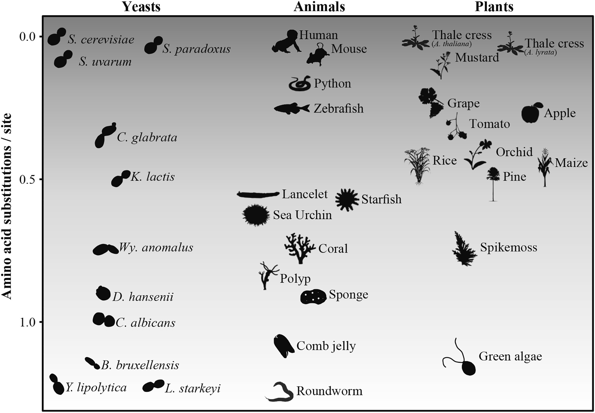

Curriculum vitae (last updated November 2018)
Biography
I have eclectic interests spanning the sciences and arts including music, graphic art, and poetry. My award-winning scientific work blends the fields of computer science and evolution to better understand biomedically and biotechnologically significant fungi (e.g., disease causing pathogens and producers of alcoholic beverages, respectively). For example, what causes some species of fungi to be pathogenic while close relatives are harmless? Or what is the evolutionary signature of domestication among yeast associated with wine-making? My artistic endeavors explore aspects of modern life experienced on global and personal levels such as raising awareness to critically endangered animals, shedding light on the everyday task of teasing apart reality from false facts, and the meaning of life itself.
My overarching goals include making education more accessible to all, facilitate student learning, and participate in artistic and scientific community engagement. To this end, I am the chair of MEGAMicrobe (an education outreach event that teaches children and adults about all things microbial), serve on committees across Vanderbilt University that aim to enhance diversity and inclusion, am a science fair judge for the Middle Tennessee Science and Engineering Fair, participant in ArtLab (an artistic exploration of the intersection between art and science), and much more.
I am always interested in collaboration because what we can achieve together is far greater than what we can achieve alone - please feel free to get in touch.
Research Interests
Recent representative publications:
Steenwyk and Rokas (2018) Frontiers in Microbiology
Steenwyk and Rokas (2017) G3

Levels of Evolutionary Sequence Divergence within the Budding Yeast Subphylum Are on Par with Levels Observed in Animals and Plants. The phylogenetic distance (y-axis) between iconic species in budding yeasts (Saccharomyces cerevisiae), animals (Homo sapiens), and plants (Arabidopsis thaliana) and other representative species in each lineage. Budding yeast diversity is on par with the plant and animal lineages. Publication PDF
In brief, my research interests include evolution, genomics, and phylogenetics, with a particular interest in molds and yeasts.
My research, conducted as part of the Antonis Rokas Lab at Vanderbilt University, aims to utilize various 'omics approaches to understand the evolution and function of fungal genomes. I implement computational tools to conduct analyses of species relationships, sequence evolution, and mutational variation across the fungal tree of life or populations thereof. These analyses can inform the evolution and/or divergence of traits important to our lives such as pathogenicity and bioindustrial traits like fermentative capacity. More generally, I am most interested in how populations and/or species evolve, diverge, and what genomic elements and traits define them.
Current projects involve wine associated strains of Saccharomyces cerevisiae (baker’s yeast) and the non-conventional wine yeast genus Hanseniaspora. Past work includes study of the primary human and animal pathogen, Cryptococcus gattii.
To facilitate these analyses, I implement multiple programming languages such as Python, R, bash, and awk. Numerous scripts that I have written are publicaly available among my github repositories. These respositories aim to enable the analysis phylogenetic, molecular, and related analyses.
Reduced Curriculum Vitae
Please see link above for complete CV
Education
Pres. Graduate Student, Biological Sciences, Vanderbilt University, Nashville, TN
2016 M.S. Biochemistry and Molecular Biology, Clark University, Worcester, MA
2015 B.A. Biochemistry and Molecular Biology, Clark University, Worcester, MA
Invited Talks
2019 Phylogenomics of Aspergillus and Penicillium Species. Phylogenomics and Evolution Group of North Carolina State University, Raleigh, NC (scheduled)
2015 Instinct and Intelligence, TedXClarkUniversity, Clark University, Worcester, MA
Contributed Talks
2019 Microbes and our food, Science club at the library, Nashville Public Library, Nashville, TN (scheduled)
2018 From bread to beer: Our unwitting domestication of yeast, Nashville Science Club, Jackalope Brewing Co., Nashville, TN
2017 Extensive Copy Number Variation in Fermentation-Related Genes Among Saccharomyces cerevisiae Wine Strains, Mycological Society of America University of Georgia, Athens, GA
2016 Population structure and copy number variation in the fungal pathogen Cryptococcus gattii, Mycological Society of America, University of California Berkeley, Berkeley, CA
2016 Population structure and copy number variation in the fungal pathogen Cryptococcus gattii, Graduate Student Multidisciplinary Conference, Clark University, Worcester, MA
Service
2018-Pres. Co-chair, MEGAMicrobe, Vanderbilt Institute for Infections, Immunology and Inflammation, Nashville, TN
2018-Pres. Vice President, Graduate Student Association, Department of Biological Sciences, Vanderbilt University, Nashville, TN
2018-Pres. Member, American Society of Microbiology Tennessee Chapter
2017-Pres. Communications chair, Inequalities in Biological Sciences Association, Vanderbilt University, Nashville, TN
2017-Pres. Member of the Dean of Graduate Student’s survey quantitative analysis subgroup, Graduate Diversity and Inclusion Committee, Vanderbilt University, Nashville, TN
2017-Pres. Judge, Middle Tennessee Science and Engineering Fair, Belmont University, Nashville, TN
2017-Pres. Educational outreach booth design and execution, MEGAMicrobe, Nashville, TN
2017-2018 Secretary, Graduate Student Association, Department of Biological Sciences, Vanderbilt University, Nashville, TN
2017-2018 Scientific consultant, Little Harpeth Brewing, Nashville, TN
2017 Vanderbilt Student Volunteers for Science, Volunteer Science Teacher, West End Middle School, Nashville, TN
2014-2015 Undergraduate Subcommittee for Department of Chemistry, Biochemistry and Molecular Biology Faculty Search Committee, Clark University, Worcester, MA
2014-2015 Science Education Outreach Blogger, C-DEBI Sci-Curious Blog
Awards
2018 GENETICS Peer Review Training Program, Genetics Society of America
2018 Best poster award, Gordon Research Conference, Holderness, NH
2018 Best poster award, Gordon Research Seminar, Holderness, NH
2018 Best poster award, Department of Biological Sciences, Vanderbilt University, Nashville, TN
2018 T-shirt design contest winner, Department of Biological Sciences, Vanderbilt University
2017 Graduate student travel grant, Vanderbilt University
2016 Graduate Student Council Travel Award, Graduate Student Multidisciplinary Conference, Clark University, Worcester, MA
2015 Summa Cum Laude, Clark University, Worcester, MA
2014 Summer research scholar, Bridging the gaps, University of Southern California Keck School of Medicine
2013 Global environmental microbiology scholar, Center for dark energy biosphere investigations, University of Southern California
2011 Jonas Clark Scholar, Clark University